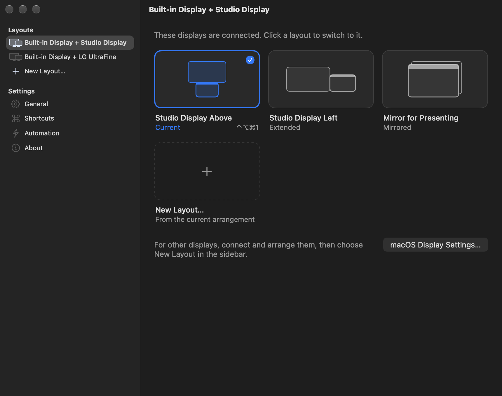

Your displays, set in one click.
Screen Setter remembers how your displays are arranged — side by side, stacked, or mirrored — and puts each arrangement back from the menu bar, with a keyboard shortcut, or automatically when the displays connect.
For macOS 26 or later, on Apple silicon and Intel Macs. Open source, and it collects no data.
Arrange once. Switch anytime.
Arrange your displays
Set them up the way you like in System Settings › Displays.
Save it as a layout
Choose Save Current Arrangement… from the menu bar and give it a name. Save as many as you like.
Switch whenever you want
Pick a layout from the menu, press its shortcut, or let it apply on its own when those displays connect.
What it does
A layout is a snapshot of a real arrangement: which display is where, which one has the menu bar, Extend or Mirror, and each display's resolution. Layouts are grouped by the exact displays they use, so the menu only shows what fits what's plugged in.
A keyboard shortcut for every layout
Shortcuts work in every app and don't need Accessibility permission. While the menu is open, ⌘1 to ⌘9 pick the first nine layouts, and Undo puts back the arrangement from just before.
Automatic, but careful
Choose one layout per set of displays to apply when they connect, when your Mac wakes, or when the app opens. It only acts when the exact same displays are back and the saved resolutions are still available, and it never undoes a change you just made by hand.
Edit a layout without the displays
Drag displays into place, choose Extend or Mirror, the main display and each resolution, even while they're unplugged. Every edit is checked before it's saved: one main display, no overlaps, every display touching another.

Works with the Shortcuts app
Switch from Shortcuts, scripts or launchers with an Open URLs action. Links can only apply saved layouts; they can't change or delete anything.
Nothing leaves your Mac
No accounts, analytics or tracking, and the app makes no network requests. Your layouts live in one file in your Library folder. Read the privacy policy.
~/Library/Application Support/ Screen Setter/library.json
Get Screen Setter. It's free.
Version 2.0, for macOS 26 or later on Apple silicon and Intel Macs.
Unzip and move it
Move Screen Setter to your Applications folder, then open it.
Allow it once
macOS says it can't verify the app. Click Done, open System Settings › Privacy & Security, and click Open Anyway.
Confirm
Click Open. From then on it opens normally and lives in your menu bar.
macOS asks because Screen Setter is free and isn't notarized by Apple, which needs a paid developer membership. To check that your download is the published one, compare its SHA-256 with the one on the release page:
Questions
Why does macOS warn me the first time?
Apple notarizes apps only for paid developer members. Screen Setter is free and open source, so it's signed without that membership. Follow the three steps above once. The source code is on GitHub if you'd like to check it or build it yourself.
What if a display goes dark after switching?
Choose Undo in the menu to put back the arrangement from just before. You can also unplug and reconnect the display, or fix it in System Settings › Displays. Screen Setter checks that every saved display and resolution is available before it changes anything.
Where is the app after I open it?
In the menu bar; it has no Dock icon. If macOS hides it to make room, open the app again to show its settings.
Does it handle Sidecar, rotation or window positions?
No. Rotation is kept as saved, but changing it needs System Settings. Sidecar connections, turning displays off, HDR and color settings, and window positions are outside what it does.
I used Display Layouts. Do I lose my layouts?
No. Screen Setter was called Display Layouts until version 2.0. It copies your saved layouts the first time it opens, and old displaylayouts:// links keep working.
How do I uninstall it?
Turn off Open at Login, quit the app from its menu, and move it to the Trash. To remove your layouts too, delete the Screen Setter folder in ~/Library/Application Support.